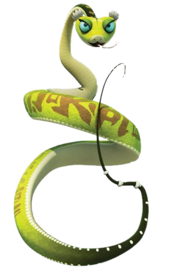

Master Viper

Wait, wait! Don't be scared! I am not a bad snake. I am actually
your friend :-)
Trust me, not all snakes are bad! Good! Now that we started to slowely
break the ice, would you like me to explain who am I and how I became
a fighting snake?
Okay so it all happened when I was a young dancer. Yes, I used to be a
dancer. One day, I was chillin' with my father, when through our door
3 warriours came, one monkey, a tigress, and a crane! After telling me
that I was wanted at the Jade Pallace, I was very surprised, but didn't
think much of it, I went on the jurney, let this be between us but that tiger
lady that later became my best friend was very weird, she was running on two legs
while having four!
Anyways, after leaving my father we head out to the Jade Palace, where, well
I think Mantis told you the rest of the story.
After defeating Boar, we were recruited by Master Oogway and Shifu, and we
slowly became the Furious Five!